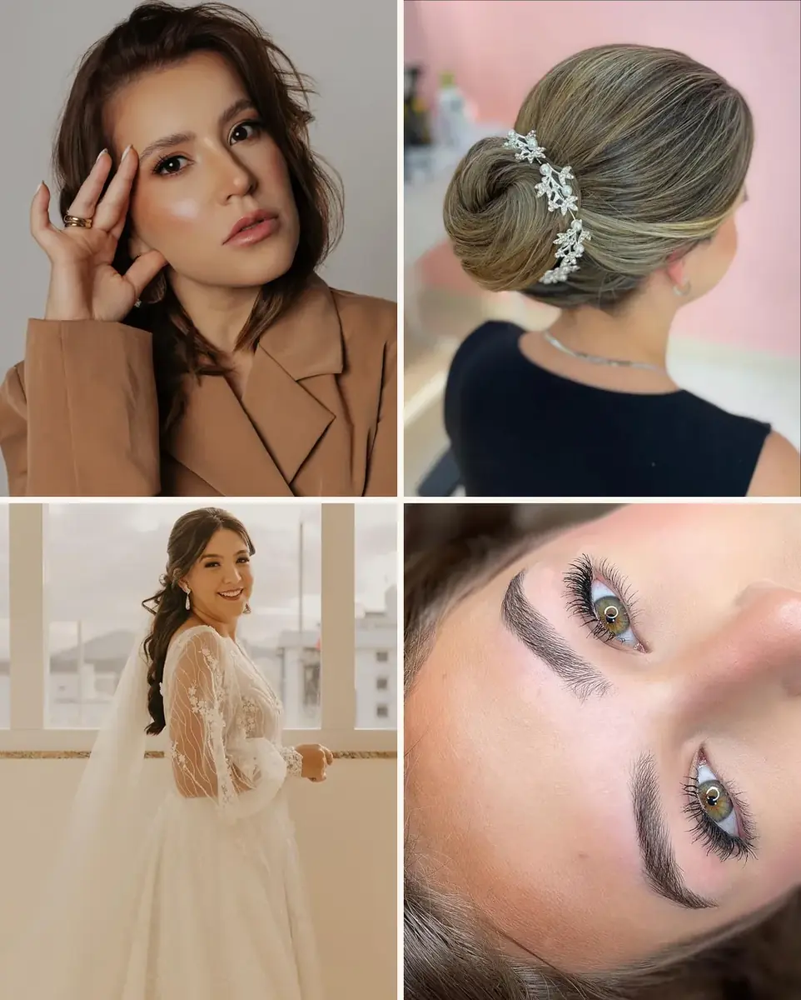

Maquiagem, Cabelo, Noivas e Sobrancelhas em Charlotte, NC
Natural, iluminada e muito você.
no Google · 12 avaliações

Looks reais, clientes reais
Maquiagem Sobrancelhas Noivas Maquiagem e cabelo Maquiagem
Maquiagem, cabelo, noivas e sobrancelhas

Maquiagem
Natural, iluminada, pronta para foto.

Cabelo
Ondas, coques e semipresos.

Noivas
Make e penteado, com prova.

Sobrancelhas
Design e linha.


Clientes reais, trabalho real


Ainda não há fotos aqui. Tente outro filtro.
Conheça a artista
Sua artista é brasileira. Teve o próprio estúdio em Vila Velha e agora leva o mesmo estilo iluminado a Charlotte — em português, inglês ou espanhol.
O que esperar
Tudo o que você precisa saber
A domicílio
Vamos até você — casa, hotel ou local do evento — em Charlotte e na Carolina do Sul vizinha.
Quando reservar
As datas de casamento lotam rápido, principalmente nos fins de semana. Envie sua data assim que tiver para garanti-la.
Seu orçamento
Cada serviço tem seu valor. Envie a data, o local e quantas pessoas, e respondemos com o seu orçamento pelo WhatsApp.
Prova de noiva
Fazemos prova, para você ver e ajustar o visual antes do grande dia. Traga fotos de referência e seus acessórios.
Nossa especialidade
Maquiagem e cabelo naturais e iluminados, com a arte brasileira: pele luminosa, definição suave e um visual que continua sendo você.
Três idiomas
Falamos português, inglês e espanhol, para você e sua família conversarem com a gente no seu idioma.
Avaliações de clientes
“…Faço make, penteado, sobrancelhas com ela há tempos e recomendo 100%!”
“…algo alegre, natural, delicado e romântico, que tivesse a ver com a minha essência!…”
“Eu amo minhas sobrancelhas feitas por ela. Recomendo demais 🥰”
“…a maquiagem está intacta até agora 😬…ficou incrível como sempre 😍”
“Trabalho impecável! Local aconchegante, que transmite paz e me faz sair sempre me sentindo linda e de alto astral rs.”
A domicílio em Charlotte, NC e SC
- Charlotte
- Uptown
- SouthPark
- Ballantyne
- Matthews
- Concord
- Huntersville
- Lake Norman
- South Carolina
Perguntas frequentes
Ainda tem dúvida? Chame no WhatsApp.Minha data ainda está livre?
Envie sua data pelo formulário ou no WhatsApp. Respondemos dizendo se está disponível.
Não quero ficar carregada. Dá para ficar natural?
Sim. Nosso estilo é leve e iluminado — uma make que as clientes descrevem como natural e delicada. Vocês conversam sobre o visual antes.
Vocês arrumam um grupo?
Sim. Diga quantas pessoas vão fazer cabelo ou make e confirmamos o que cabe no seu horário.
Vocês só atendem noivas?
Não. Fazemos maquiagem, cabelo e sobrancelhas também para eventos, ensaios fotográficos e o dia a dia. Noivas é um dos quatro serviços.
Consulte sua data
5,0 no Google · 12 avaliações
Tenha em mãos: data, número de pessoas, cidade ou local.
* obrigatório
ou